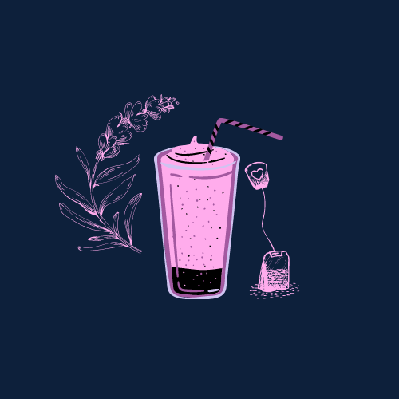

ROSE MILK TEA
Ingredients:
1 cup water
1-2 teaspoons black tea leaves (or 1-2 tea bags)
2 teaspoons dried edible rose petals (or rose petal jam)
1 cup milk
Sugar or honey to taste
PROCEDURE
Boil Water:
Bring water to a boil in a saucepan.
Steep Tea and Rose Petals:
Add the black tea leaves and rose petals to the boiling water.
Reduce the heat and let it simmer for about 3-5 minutes.
Add Milk:
Pour in the milk and return to a slight boil. If you prefer a creamier texture,
you can also froth the milk before adding it.
Sweeten:
Add sugar or honey to taste.
Strain and Serve:
Strain the mixture into a cup to remove the tea leaves and petals. Serve hot.